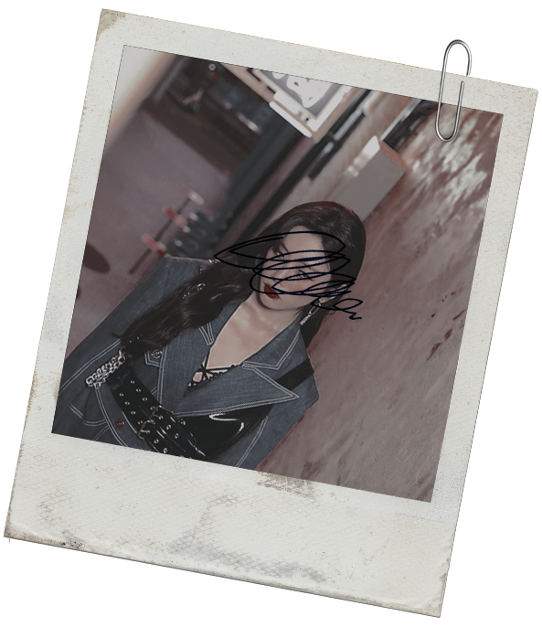

—Terry... —Gracias a todos los dioses solo ella puede oírlo— No puedes ser tú...
La voz nace tras ella, por eso Terry se vuelve lentamente. Por eso y porque cree haber reconocido la voz de alguien... La voz de Audrey. Ah... Tiene el nombre en la punta de la lengua, pero hay algo dentro de sí que desea fervientemente bloquear todo recuerdo de aquella chica.
¿Podría ser...?
La mirada de soslayo recae sutilmente sobre Audrey. Han sido meses de arduo trabajo y, si algo ha podido sacar de la escuela de actuación, es el disimulo.
Pero Terry sigue siendo Terry, así que fracasa miserablemente y su mirada acaba resultando intensa, como si irradiase una luz propia.
—Hola. —Se arma de valor para poder entonar el saludo con la habitual elegancia y cordialidad de su hermana. Entreabre los labios para pronunciar palabra, pero no emerge vocablo alguno.
Solo los segundos ejercen de conciliador amigo.
—Soy Ivy…, ¿y tú?
Es cuando su expresión se crispa de puro desconcierto cuando Terry es capaz de darle forma clara a su nombre: Audrey. No hace falta que se lo diga, pero la evocación de esas seis letras le provoca un escalofrío al devolverla a la primera noche en la que se lo dijo al oído. Había sido en una situación muy diferente, cuando ella todavía se hacía llamar Terry y tenía libertad suficiente como para conocer y pasar la noche con chicas como Audrey. Solo que no hay más chicas como ella.
Audrey había sido la única chica en romperle el corazón .
—Soy Audrey...
A medida que la distancia es apurada por su cuerpo, lamenta haberse acercado. Tuvo en alta estima su valor y sus capacidades; ninguna de las dos resulta en especial sobresaliente ahora y resulta delator el compromiso en el que se ha inmerso.
—Es un gran placer. ¿Llevas mucho tiempo por aquí?
Escruta los ojos de la chica y encuentra en su profundidad la misma nocturnidad que en tiempos pasados arroparon juntas. Sí. Está más segura que nunca que se trata de ella. De la chica que la hirió profundamente tras haberle dado a conocer la felicidad en una noche.
Todos sus sentimientos quedan soterrados bajo su sonrisa ferozmente alentadora.
